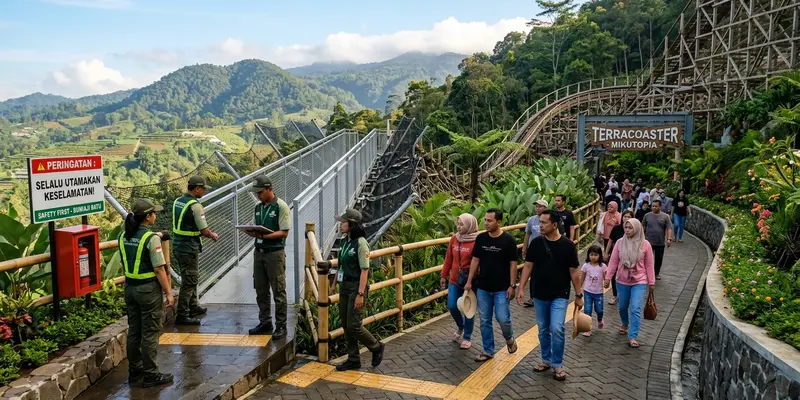

Kontroversi Mikutopia Batu bermula dari temuan dokumen lingkungan hidup yang belum lengkap saat destinasi ini mulai beroperasi, ditambah insiden meninggalnya pengunjung dan laporan kerusakan wahana yang membuat isu keselamatan turut disorot publik.
Ringkasan Inti
- Satpol PP Kota Batu menemukan Mikutopia belum memiliki SPPL, Amdal, dan UKL-UPL saat mulai beroperasi.
- Ada ketidaksesuaian luas lahan antara izin awal sekitar 7,76 hektare dan kondisi riil sekitar 10,1 hektare.
- Seorang pengunjung dilaporkan meninggal dunia di area antrean tiket pada 23 Maret 2026.
- Video viral memperlihatkan kepanikan pengunjung setelah wahana bernama Tiram dilaporkan rusak pada 3 April 2026.
- Hingga 9 April 2026, kuasa hukum pengelola menegaskan belum ada penyegelan resmi dan operasional tetap berjalan.
Apa Masalah Izin Lingkungan Mikutopia Batu?
Masalah izin lingkungan Mikutopia Batu terletak pada belum lengkapnya dokumen SPPL, UKL-UPL, dan Amdal saat destinasi ini sudah mulai beroperasi untuk uji coba. Satpol PP Kota Batu menegaskan tidak pernah memberikan izin maupun rekomendasi atas pelaksanaan uji coba tersebut.
Berdasarkan laporan Malang Posco Media edisi 6 April 2026, persoalan ini juga diperparah oleh ketidaksesuaian antara siteplan izin awal seluas sekitar 77.666 meter persegi atau 7,76 hektare dengan kondisi riil di lapangan yang mencapai 101.003,40 meter persegi atau sekitar 10,1 hektare. Dokumen Persetujuan Bangunan Gedung atas nama BUMDes pun disebut hanya mencakup sebagian kecil dari total luas lahan yang sudah dibangun.
Selain itu, terdapat rekomendasi Andalalin terkait pelebaran jembatan dan peningkatan kapasitas jalan yang menurut laporan tersebut belum sepenuhnya ditindaklanjuti, menimbulkan kekhawatiran warga desa sekitar terhadap potensi kemacetan dan dampak lingkungan.
Insiden Apa Saja yang Pernah Terjadi di Mikutopia Batu?
Dua insiden utama yang membuat Mikutopia Batu disorot adalah meninggalnya seorang pengunjung di area antrean tiket dan laporan kerusakan salah satu wahana yang memicu kepanikan pengunjung. Kedua insiden ini terjadi dalam rentang waktu berdekatan pada Maret hingga April 2026.
Berdasarkan laporan MediaKompeten, seorang pengunjung bernama Suyati dilaporkan mendadak pingsan saat mengantre di loket tiket masuk pada 23 Maret 2026 sekitar pukul 11.50 WIB, dan meninggal dunia setelah mendapat penanganan medis. Kejadian ini mendorong Wahana Lingkungan Hidup Indonesia atau Walhi Jawa Timur mendesak audit menyeluruh terhadap izin lingkungan dan aspek keselamatan Mikutopia.
Insiden lain terjadi pada 3 April 2026, ketika sebuah video viral di TikTok memperlihatkan kerumunan panik pengunjung setelah wahana bernama Tiram diduga mengalami kerusakan parah. Menurut laporan detik.com, salah satu pengunjung menyebut suaminya turut membantu menolong korban yang terluka akibat insiden tersebut.

Penerapan standar keselamatan dan evaluasi teknis operasional menjadi perhatian penting bagi keberlanjutan wisata Mikutopia.
Apakah Mikutopia Batu Sudah Ditutup atau Disegel?
Berdasarkan laporan terakhir yang tersedia, Mikutopia Batu belum secara resmi disegel oleh Satpol PP Kota Batu, meski sempat beredar isu penutupan yang menuai kebingungan di masyarakat. Kuasa hukum pengelola menegaskan pada 9 April 2026 bahwa operasional tetap berjalan.
Menurut laporan Suara Jatim Post, isu penyegelan mencuat setelah beredar kabar bahwa Satpol PP telah melayangkan surat larangan operasional sementara, namun pihak pengelola membantah bahwa hal itu berarti telah terjadi penyegelan resmi. Sementara itu, laporan Ekado pada 12 April 2026 mengonfirmasi bahwa Satpol PP Kota Batu menegaskan belum ada tindakan penyegelan meski ditemukan sejumlah temuan administratif.
Pemerintah Kota Batu menyatakan keputusan penutupan sementara akan bergantung pada hasil evaluasi teknis lintas dinas, termasuk Dinas Lingkungan Hidup dan Dinas Perhubungan, sehingga status operasional Mikutopia berpotensi berubah sewaktu-waktu tergantung perkembangan proses tersebut.
Kesimpulan
Kontroversi Mikutopia Batu berpusat pada dua isu utama, yaitu kelengkapan dokumen izin lingkungan yang belum tuntas dan insiden keselamatan yang sempat terjadi selama masa uji coba. Karena status operasional dapat berubah mengikuti hasil evaluasi pemerintah, calon pengunjung disarankan memeriksa informasi terbaru sebelum memutuskan untuk berkunjung. Simak juga artikel terkait latar belakang Mikutopia Batu serta rute dan lokasi Mikutopia.
FAQ Seputar Kontroversi Mikutopia Batu
Masalah utamanya adalah belum lengkapnya dokumen lingkungan hidup seperti SPPL, UKL-UPL, dan Amdal saat operasional uji coba sudah berjalan, ditambah ketidaksesuaian luas lahan dengan izin awal.
Berdasarkan laporan media, seorang pengunjung bernama Suyati dilaporkan meninggal dunia setelah pingsan di area antrean tiket masuk pada 23 Maret 2026.
Hingga laporan terakhir yang tersedia, belum ada penyegelan resmi, meski sempat beredar isu penutupan yang kemudian diklarifikasi oleh Satpol PP Kota Batu.